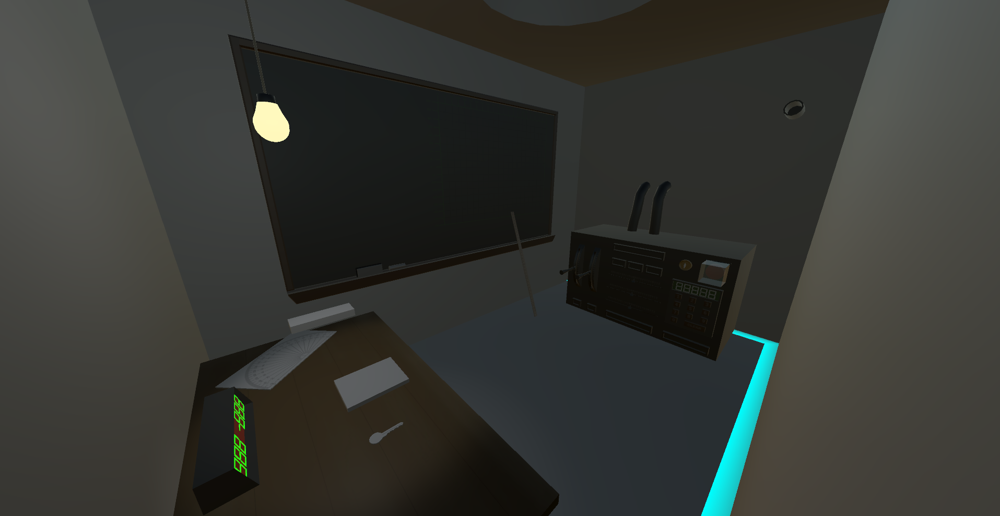
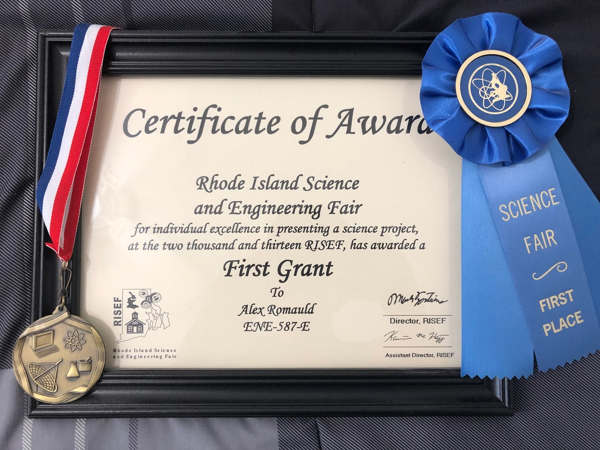

Misc Projects
Here’s a brief overview of some of the other things I’ve worked on.
Baby Rush
A third-person action stealth game following a baby on a mission to collect teddy bears while avoiding and causing distractions for the daycare workers. The player can throw raddles, sprint, collect milk bottles to refill stamina, and crawl around.

Built in Unity by a team of five, including myself. I worked on the player's abilities, collectibles, traps, AI, UI, third-person camera, and design.
Hellbound
An open-world first-person shooter. The game started as a passion project in middle school. Initial iterations of the game were very rudimentary, mostly focusing on a time-based survival mode.

Later iterations of the game focused on introducing RPG-like elements. The player could find loot in the world, enhance their gear, and level up. The game was built in Unity and all of the models/animations were done in 3ds Max.
Dead Lab
A first-person horror game built in Unity. This project was a collaborative effort. My main job on the project was implementing the save system and collectibles. This went on to be played by popular YouTubers such as PewDiePie and Markiplier.

The Bunker
A VR puzzle game set in World War I. Positioned underground, the concrete walls rumble to the bassy tune of artillery fire and dust shakes from the ceiling. Commands come in from the safety of a looming zeppelin, guiding you through your job.
What was built was an experience that required the player to physically interact with their environment to make sense of the world and make progress. The player could keep notes on the chalkboard, shuffle through papers, decode messages, and manipulate every button, knob, and lever of the machine.
Science/Engineering Fair Projects
Confuzzled is a puzzle game about navigating a ball to the exit. The ball can only move in cardinal directions and can’t stop until it hits a wall.

The process of making levels was very tedious. It Involved coloring cells in Microsoft Excel to visualize the level, then translating it into a text document for the game to read. Needless to say that this quickly became a bottleneck, creating levels and testing ideas was far too time-consuming, and iterating on feedback was slow. The time it took to build a simple level editor was dwarfed by the time it saved, and the quality of work I was able to achieve when not being bogged down by an inefficient pipeline. This was an early lesson that stressed the importance of having good tools.
I submitted Confuzzled to the high school science fair during my sophomore year and ended up winning first place at Rhode Island’s State Science Fair (2013).
For my freshman year science fair project, I submitted a mobile game I built using the iPod's gyroscope. Tilting the iPod, you would steer a rolling ball past obstacles, balance over narrow paths, and activate checkpoints.